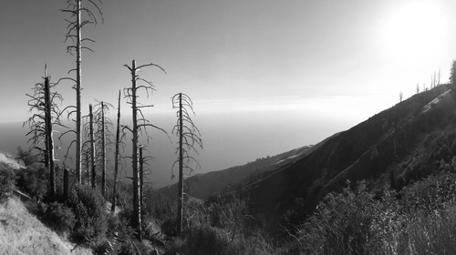
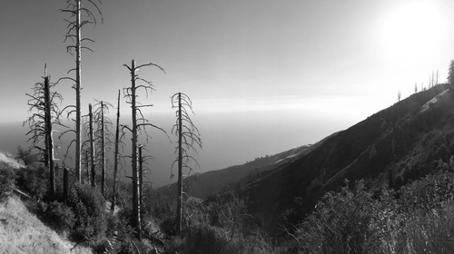

Evan Dorsky
- Olin College Electrical and Computer Engineering '16
- SPG Hardware System Integration Engineer at Apple
- San Francisco
- Course designer and teaching team member at Olin College


I worked on a team of Olin students with Ivani, an IoT startup. We explored new markets for their low-power presence sensing technology, developed a prototype of an outlet-based power monitor, and filed a provisional patent.
I worked on a team to build an arcade cabinet based on the cooperative smartphone game Spaceteam. Each player receives commands at their console, which has a suite of buttons, switches, and sliders. Many commands received at one console can only be completed at another. Players must communicate these commands to each other (often by shouting) to pilot their spaceship for as long as they can.


Dollar Koi Fish - Won Park
Squirrel - Michael G. LaFosse
 



Los Padres National Forest - Big Sur
Climbing near Tuolumne Meadows - Yosemite
Wawona - Yosemite
Olin.js
Practical EE
A course on web development
A course on introductory electrical engineering concepts